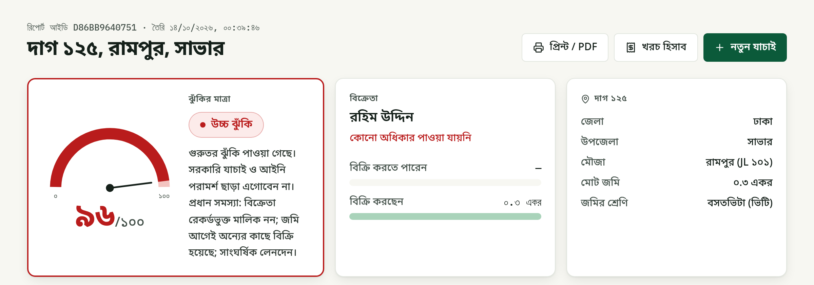
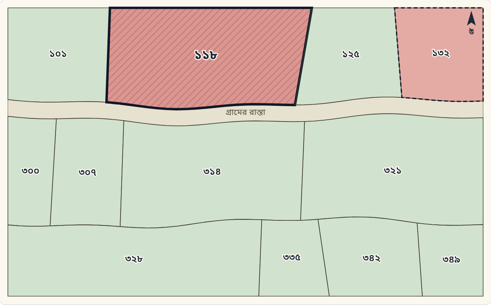

A buyer enters the mouza, dag number and seller's name, or uploads the papers the seller handed over. JomiCheck checks the land the way an experienced land lawyer would, and in about a minute returns a Low / Medium / High risk score in which every finding names the law behind it, explains it in plain Bangla or English, and says what to do next. The report is sealed with a SHA-256 hash and a QR code so a bank, lawyer or family member can confirm it was not edited.
For most families in Bangladesh, buying land is the largest purchase of their lives, and one of the riskiest. The facts that decide whether a sale is safe are spread across many records and offices: the khatian (record of rights) from four successive surveys (CS, SA, RS, BS), mutation (namjari) cases at the AC Land office, registered deeds at the sub-registry, court cases, government khas and acquisition lists, bank mortgages, powers of attorney, and the land tax (dakhila) office. An ordinary buyer cannot read and cross-check all of these, so they rely on the seller's word and on papers the seller provides. That gap is where fraud happens:
| Risk | What happens to the buyer |
|---|---|
| Seller is not the owner | Someone sells land recorded in another person's name, or land of a deceased owner without the other heirs. |
| Double selling | The same dag, or the same share, was already sold by registered deed or promised by bainanama to another buyer. |
| Over-selling by heirs | An heir sells more than his Faraiz share; siblings and the widow later sue. |
| Forged papers | A fabricated khatian, a deed number that does not exist, or a tax receipt showing taxes paid that were never paid. |
| Restricted land | Khas, vested, waqf or forest land; acquisition notices; injunctions; mortgages. |
| Changes after checking | Between the bainanama and registration, the seller sells again, mortgages the land, or a case is filed. |
The cost is lost savings, years in civil courts and broken family relationships. Citizens need a way to screen a plot before paying any money, in their own language, without needing to be a lawyer.
JomiCheck is a working web application (Django REST API + Next.js, bilingual Bangla/English, mobile-friendly). It offers four entry points:

The seller's name, in Bangla or English, is matched against the recorded owners of the latest khatian, the heirs of deceased owners, buyers in later registered deeds, and holders of a power of attorney. Matching uses RapidFuzz with Bangla–English transliteration and prefix handling (e.g. "Md." / "মোঃ"), so "Md. Rahim Uddin" and "মোঃ রহিম উদ্দিন" are recognised as the same person. The result decides which rules apply: an owner, an heir, a deed buyer and an attorney each have different legal requirements.
Each rule is written once in a catalog with its tier, weight, bilingual explanation, recommended action, a question to ask the seller, and the law it comes from (Registration Act 1908, Transfer of Property Act 1882, State Acquisition and Tenancy Act 1950, Land Crime Prevention and Remedy Act 2023, Land Development Tax Act 2023, Power of Attorney Act 2012, Acquisition Act 2017, Guardians and Wards Act 1890, CPC Order XXXIX, Muslim personal law).
| Tier | Examples | Effect |
|---|---|---|
| Critical | Seller not the owner; recorded owner deceased; land already sold; khas, vested, waqf or forest land; acquisition notice; injunction; invalid power of attorney; uploaded paper contradicts the record | +35 to +40; result is High regardless of score |
| Major | Pending case; break in the survey chain; heir over-selling his Faraiz share; minor's land sold without court permission; mortgage; rapid transfers; mutation missing; prior bainanama; ML-detected unusual transfer | +20 to +30 |
| Minor | Conflicting deeds; pre-emption (Hak-e-Shufa) risk; wrong khatian number; under-priced past deed; tax arrears; sale through a valid attorney; other buyers checked this dag | +5 to +10 |
The score is capped at 100: 0–30 Low, 31–60 Medium, 61–100 High. Because every point comes from a named rule, the result is never a black box.
When the recorded owner has died, JomiCheck computes each heir's share under Muslim personal law (spouse, sons, daughters, father, mother, including 'awl, radd and the Umariyyatan cases) and checks whether the heir selling is offering more than his share. For non-Muslim owners it asks for a lawyer's review rather than guessing.
Gemma 4 (Google AI Studio) reads each uploaded paper into structured fields. The comparison itself is done by code, not by the AI: does this khatian number exist in this mouza; do owners and shares (in ana-gonda-kora-kranti or fractions) match; are the dags and area right; does the deed number exist in the sub-registry record, or was it cancelled; are the sellers, buyers and date correct; does the tax receipt's holding number and paid-up year match the tax record. A paper that contradicts the record raises a Critical finding under the Land Crime Prevention and Remedy Act 2023 (s.5) and the Penal Code (ss.467, 471).
An Isolation Forest (scikit-learn) scores every sale of the plot in the last ten years plus the proposed sale on five features: price ÷ government mouza rate, how long the seller held the land, sales of the dag within a year, share of the dag sold, and dags sold by the same seller within a year. It catches combinations no single rule catches, such as a broker quickly reselling many dags. Trained on 20,000 synthetic transfers with 5% planted fraud patterns, it reaches on a separate synthetic test set of 5,000:
| Precision | Recall | F1 | False-positive rate |
|---|---|---|---|
| 0.745 | 0.712 | 0.728 | 0.013 |
These numbers show that the pipeline works on synthetic data; they are not real-world accuracy. The model never decides alone that land is unsafe: it adds evidence to a rule or raises one Major finding with plain-language reasons.

14 planted scenarios cover the main fraud types, from a clean sale (Low) to double selling, khas land, an injunction, a revoked power of attorney, a widow selling a minor's share, and a broker pattern that only the ML model catches. Three sets of sample papers include a forged khatian, a deed whose number is not in the sub-registry record, and a tax receipt showing taxes paid two years beyond the record.
The prototype is deployed on AWS EC2 and covered by 71 automated tests (Faraiz, every demo scenario, khatian notation, costs, ML model, document cross-check, plot watch, map, API and tamper detection).
| Layer | Choice and reason |
|---|---|
| Backend | Python 3, Django 6 + Django REST Framework; SQLite in the prototype, PostgreSQL-ready. Rules, Faraiz and scoring are plain, tested Python. |
| Frontend | Next.js 16, React 19, Tailwind CSS; full Bangla/English interface; works on a phone. |
| AI | Gemma 4 (open-weight model, via Google AI Studio) for reading documents and answering questions. An open model can later run on government servers so citizen documents never leave the country. |
| ML and matching | scikit-learn Isolation Forest; RapidFuzz for Bangla/English name matching. |
| Integrity, hosting | SHA-256 hash, QR code and public check page; AWS EC2 with nginx, gunicorn and systemd. |
Path to real use: the engine already works on the same structure as the national records (mouza, JL, dag, khatian of each survey, mutation case, deed). Connecting it to authorised APIs of e-Porcha, e-Mutation, the land development tax system and sub-registry deed records replaces the synthetic database without changing the rules. Our first target is a pilot in one upazila with the AC Land office, offered free to citizens; banks and institutions could pay for bulk or API checks.
Cursor (AI coding assistant) helped scaffold the Django and Next.js projects, draft code, write tests and documentation; all code was reviewed, run and tested by the team. Gemma 4 (Google AI Studio) is part of the product: it reads uploaded documents and answers questions about a report, using synthetic data only.
Source code: github.com/nomancsediu/JomiCheck · Live prototype: http://18.143.183.93 · Team Semicolons: [Team leader name], [Member name], faculty mentor [Mentor name], [University]